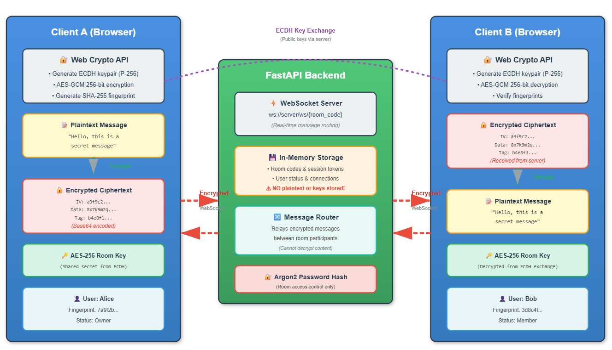

Security
2025 • Security
~5 min read
How I Built RabbitChat: A Privacy-First Chat App
Ephemeral in-memory storage, WebSockets and end-to-end encryption in a minimal chat platform.
FastAPI
WebSockets
Security
Architecture
Read article